🔥 Heat: Transfer of Thermal Energy 🔥
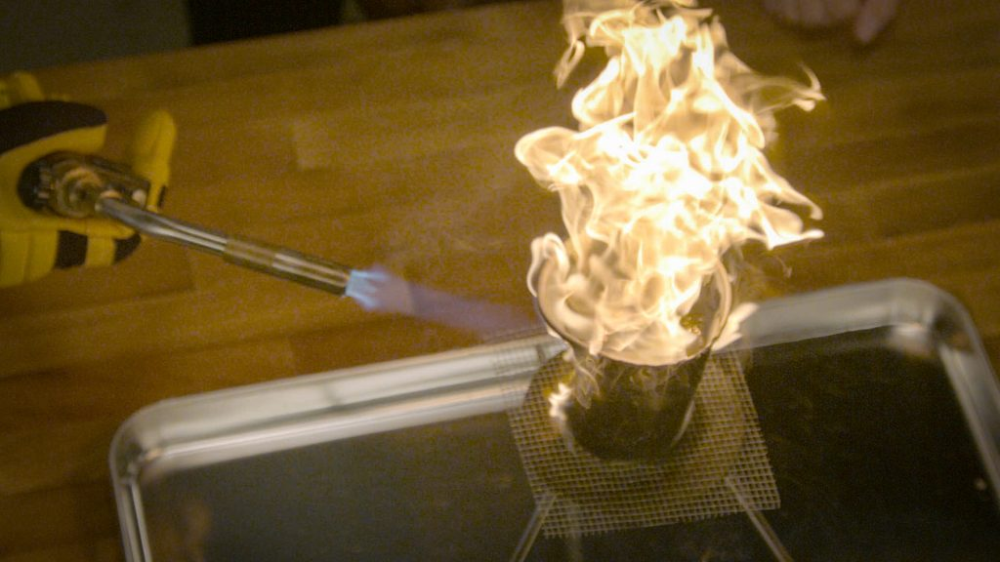
A Bunsen burner flame demonstrates thermal energy in action - the rapid movement of particles creates the heat and light we observe.
Big Idea: Heat is not what you might think! It's not the "hotness" of something, but rather the transfer of thermal energy from one object to another.
🌡️ Understanding Temperature, Thermal Energy, and Heat
What is Temperature?
Temperature is what a thermometer reads, but what does that really mean? To understand this, we need to think about substances in two ways:
- Macroscopic level: What we can see with our eyes (like a cup of coffee sitting still)
- Particle level: The atoms and molecules that make up the substance (too small to see, but constantly moving!)
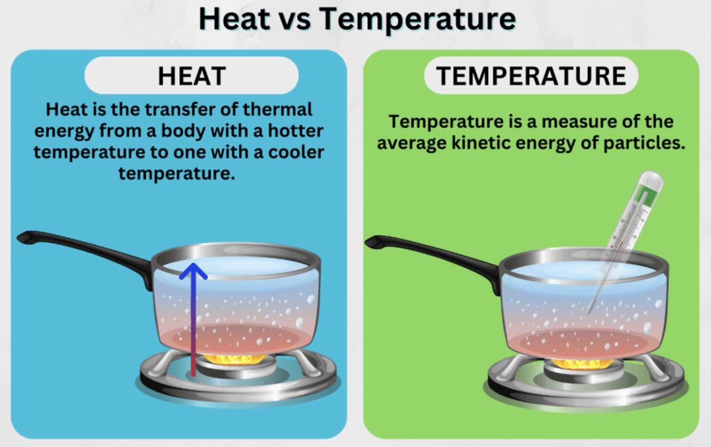
Understanding the key differences between heat and temperature
🤔 Think About This: Even though your hot coffee appears to be perfectly still, billions of tiny particles inside it are vibrating, rotating, and moving around like crazy!
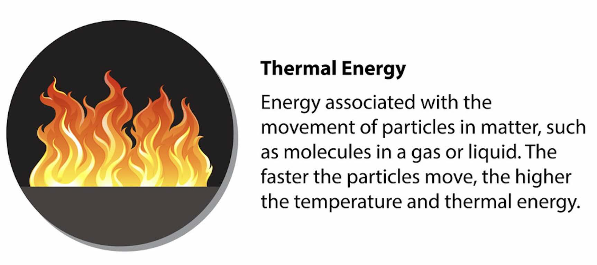
Thermal energy is the total kinetic energy of all particles in a substance - the flame shows this energy in visible form!
Temperature is a measure of the average kinetic energy of the particles in a substance. The faster the particles move, the higher the temperature!
What is Thermal Energy?
Thermal energy is the total energy contained within a system due to the motion of all its particles. It depends on:
- How fast the particles are moving (temperature)
- How many particles there are (mass)
Real-World Example: A cup of hot tea vs. a spoonful of hot tea at the same temperature. Which has more thermal energy? The cup! It has way more particles, even though they're moving at the same average speed.
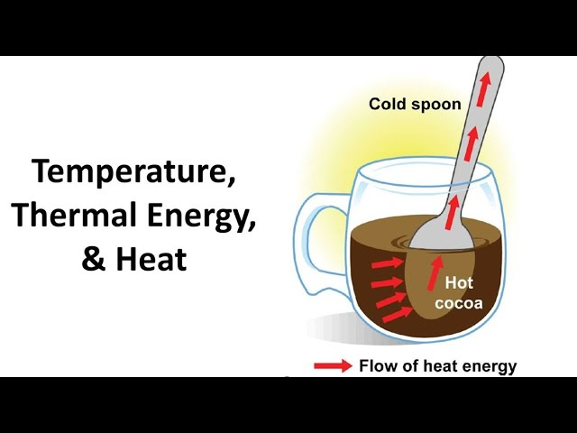
The hot cocoa has more thermal energy than the spoon, even at the same temperature, because it contains more particles
What is Heat?
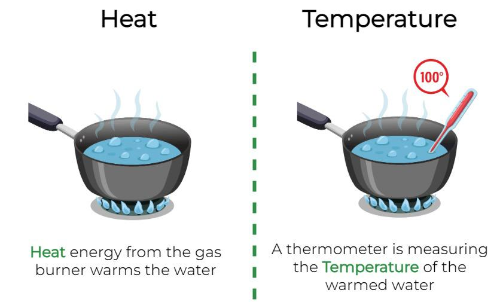
This diagram clearly shows the distinction between heat (energy transfer) and temperature (average particle energy)
Heat is the transfer of thermal energy from hotter objects to colder objects. It's not a thing that objects "have" - it's a process that happens!
🔄 When you leave hot coffee on a counter, it cools down because heat (thermal energy transfer) is occurring from the coffee to the cooler surroundings.
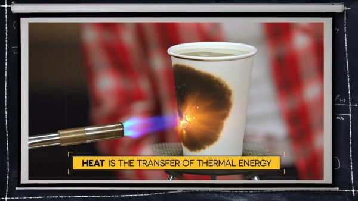
This torch heating a cup perfectly demonstrates heat transfer in action - thermal energy flows from the hot flame to the cooler cup
🚀 The Three Methods of Heat Transfer
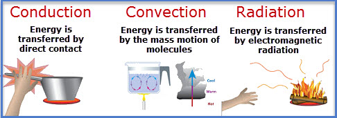
The three fundamental methods of heat transfer: conduction (direct contact), convection (fluid movement), and radiation (electromagnetic waves)
1. Conduction 🤝
Conduction is the transfer of thermal energy through direct contact between particles. Think of it like a chain reaction of particle collisions!
How Conduction Works:
- Fast-moving particles (hot end) bump into slower particles (cool end)
- Energy transfers from fast particles to slow particles
- No particles actually move from place to place - just energy!
- This continues along the entire object
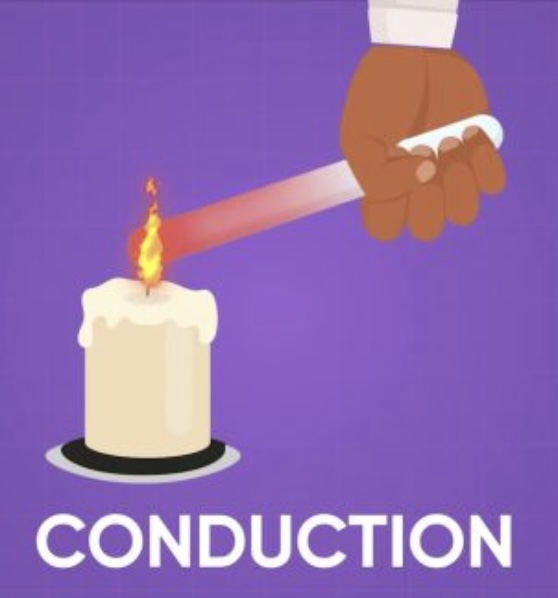
Conduction occurs when fast-moving particles transfer energy to slower-moving particles through direct contact
Conduction in Action: Imagine heating one end of a copper bar with chocolate pieces on the other end. The copper atoms at the hot end start "wiggling" more vigorously, bumping into their neighbors, passing energy along until the chocolate melts!
Analyzing the Conduction Diagram: In the diagram above, notice how the particles at the heated end are moving rapidly (shown with longer motion lines), and this energy gradually transfers through particle collisions to the cooler end. The temperature gradient shows how heat flows from high to low temperature regions.
Best conductors: Metals (like copper, iron, aluminum)
Poor conductors (insulators): Wood, plastic, air
2. Convection 🌊
Convection is the transfer of thermal energy through the circulation of fluids (liquids and gases). The heated fluid itself moves, carrying energy with it!
How Convection Works:
- Fluid gets heated and expands (particles move faster and spread out)
- Heated fluid becomes less dense and rises
- Cooler, denser fluid sinks to replace it
- This creates circulation currents that transfer energy
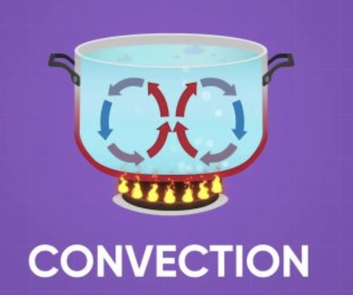
Convection currents form when heated fluid rises and cooler fluid sinks, creating a circulation pattern
Convection in Action: When you heat water in a pot, the water at the bottom gets hot first, becomes less dense, and rises. Cool water from the top sinks down to be heated. This creates swirling currents that distribute heat throughout the water!
Understanding the Convection Diagram: The arrows in the diagram show the circulation pattern - hot fluid (red) rises on one side while cool fluid (blue) descends on the other. This continuous circulation efficiently transfers thermal energy throughout the fluid.
💡 Common Mistake: People say "heat rises," but it's more accurate to say "heated fluid rises" because the warm fluid carries the thermal energy upward.
Where you see convection: Heating systems in homes, weather patterns, ocean currents, boiling water
3. Radiation ☀️
Radiation is the transfer of thermal energy through electromagnetic waves. No matter needs to be present - energy can travel through empty space!
How Radiation Works:
- All objects emit electromagnetic waves based on their temperature
- These waves carry energy through space
- When waves hit another object, the energy is absorbed
- The absorbed energy increases the kinetic energy of particles in the receiving object
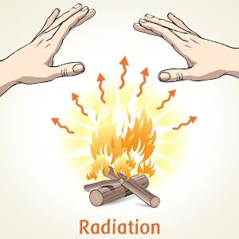
A campfire demonstrates radiation - you feel the heat even without direct contact because electromagnetic waves carry thermal energy through the air
Radiation in Action: Sitting by a campfire, you feel warm even without touching the fire or having hot air blow on you. The fire emits infrared radiation that travels through the air and is absorbed by your skin!
Examples of radiation: Sunlight warming Earth, feeling heat from a fireplace, heat lamps, microwave ovens
⚡ Factors Affecting the Rate of Heat Transfer
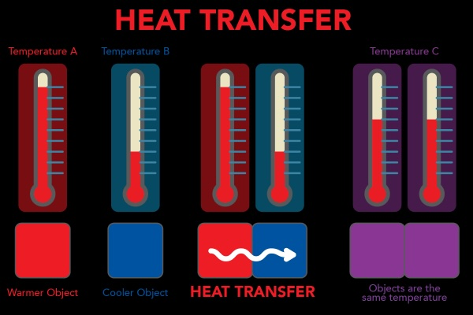
This diagram shows how temperature differences drive heat transfer - the greater the difference, the faster the transfer rate
1. Amount of Substance (Mass)
🤔 Which cools down faster: tea in a cup or tea in a spoon? The spoon! With fewer particles, thermal energy transfers away more quickly.
Key Principle: More mass = more thermal energy, but less mass = faster rate of temperature change
2. Type of Material
Different materials have different abilities to store and transfer thermal energy. This is called heat capacity.
Material Comparison: If you heat equal masses of iron, tin, and bismuth to the same temperature and drop them into identical containers of cool water:
- Iron increases water temperature by 30°C
- Tin increases water temperature by 15°C
- Bismuth increases water temperature by 5°C
This shows that iron transfers energy most easily, while bismuth holds onto its energy longer!
3. Temperature Difference
The greater the temperature difference between objects, the faster heat transfer occurs.
4. Surface Area
More surface area allows for faster heat transfer because there's more contact between substances.
🧪 Interactive Learning Activities
🎯 Heat Transfer Detective
For each scenario below, identify which type(s) of heat transfer are occurring:
Scenario 1: A metal spoon gets hot when left in a pot of soup
Answer: Conduction (direct contact between spoon and soup)
Scenario 2: Your hands feel warm when held near (not touching) a hot stove
Answer: Radiation (electromagnetic waves from stove to hands)
Scenario 3: Hot air from a heater circulates around a room
Answer: Convection (heated air rises and circulates)
🔬 Virtual Experiment: Particle Motion
Imagine you could see the particles in three different materials:
- Hot material: Particles moving very fast, lots of space between them
- Warm material: Particles moving at medium speed, moderate spacing
- Cool material: Particles moving slowly, close together
When the hot material touches the cool material, fast particles bump into slow particles, transferring energy until both materials reach the same temperature!
🌍 Real-World Applications
Engineering Solutions Using Heat Transfer
- Puffy jackets: Trap air to reduce convection and conduction
- Emergency blankets: Shiny surface reflects radiation back to your body
- Solar cookers: Use radiation from the sun to cook food
- Computer fans: Use convection to cool electronic components
- Home insulation: Reduces all three types of heat transfer
- Car radiators: Use convection and conduction to cool engines
Understanding Everyday Phenomena
Why does your tongue stick to a frozen pole?
The metal pole conducts heat away from your warm, moist tongue so quickly that the saliva freezes, creating an icy bond!
🎓 Key Concepts to Remember
Essential Vocabulary
- Heat: Transfer of thermal energy from one object to another
- Thermal Energy: Energy contained within a system due to particle motion
- Temperature: Measure of average kinetic energy of particles
- Conduction: Heat transfer through direct contact
- Convection: Heat transfer through fluid circulation
- Radiation: Heat transfer through electromagnetic waves
- Heat Capacity: A material's ability to store thermal energy
- Density: Mass per unit volume; affects convection currents
🎯 Master These Relationships
- Temperature ↔ Particle Speed: Higher temperature = faster average particle motion
- Mass ↔ Thermal Energy: More mass = more total thermal energy (at same temperature)
- Mass ↔ Cooling Rate: Less mass = faster temperature change
- Density ↔ Convection: Heated fluids become less dense and rise
- Material Type ↔ Heat Capacity: Different materials store and transfer energy differently
🧠 Critical Thinking Challenges
Challenge 1: The Coffee Cup Mystery
You have two identical cups with the same temperature coffee. One cup is full, the other half-full. Which will cool down faster and why?
Think about: mass, surface area, and rate of heat transfer!
Challenge 2: The Material Investigation
You heat three identical masses of different metals (iron, copper, aluminum) for the same amount of time. They reach different final temperatures. What does this tell you about their heat capacities?
Think about: how easily different materials gain and lose thermal energy!
Challenge 3: The Home Heating System
Explain how all three types of heat transfer work together in a home heating system to warm an entire house.
Think about: the heat source, air movement, and how energy reaches different rooms!
🎉 Conclusion
Understanding heat transfer helps us explain countless phenomena in our daily lives and enables engineers to design better solutions for heating, cooling, and energy efficiency. Remember that heat is always on the move - flowing from hot to cold through conduction, convection, and radiation!
The Big Picture: Every time you feel warmth, notice something cooling down, or see steam rising, you're witnessing the fundamental physics of thermal energy transfer that governs everything from the smallest molecular interactions to the largest weather systems on Earth!